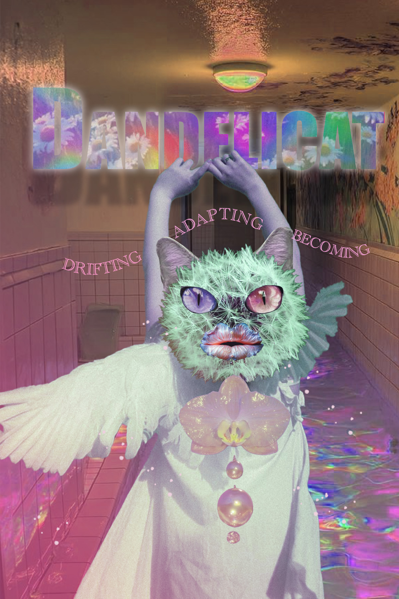
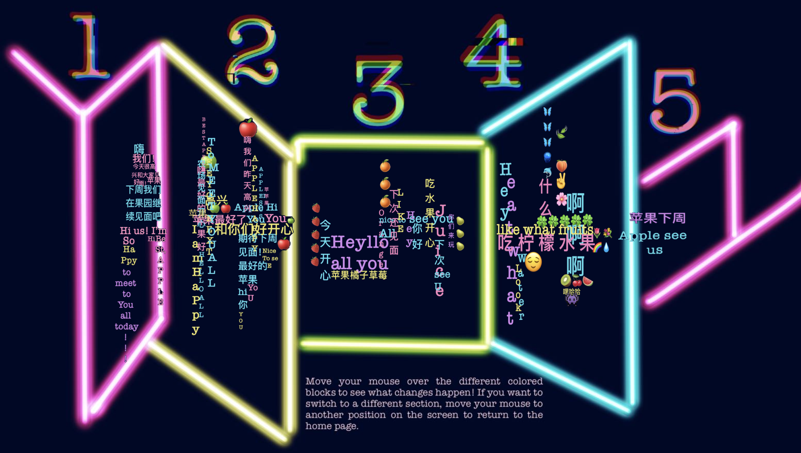
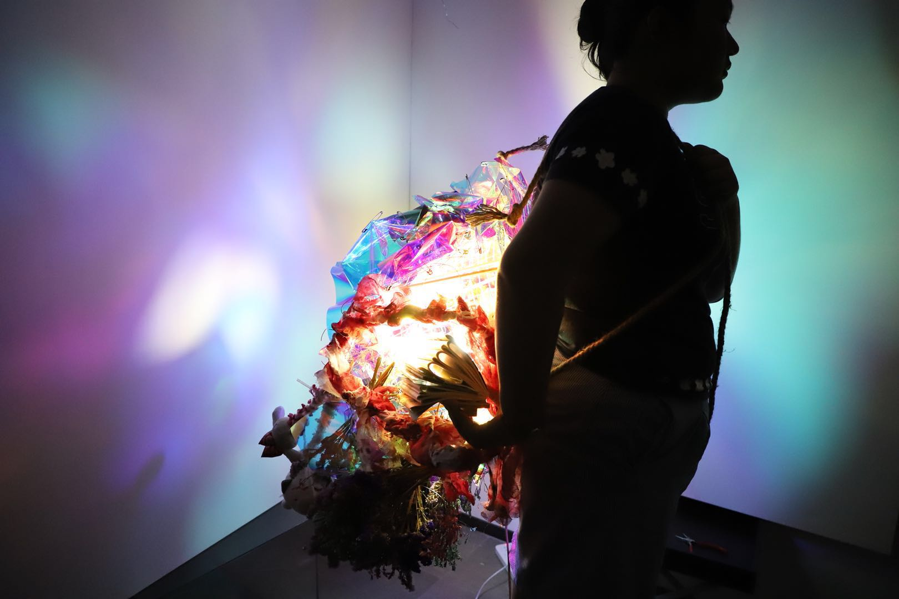
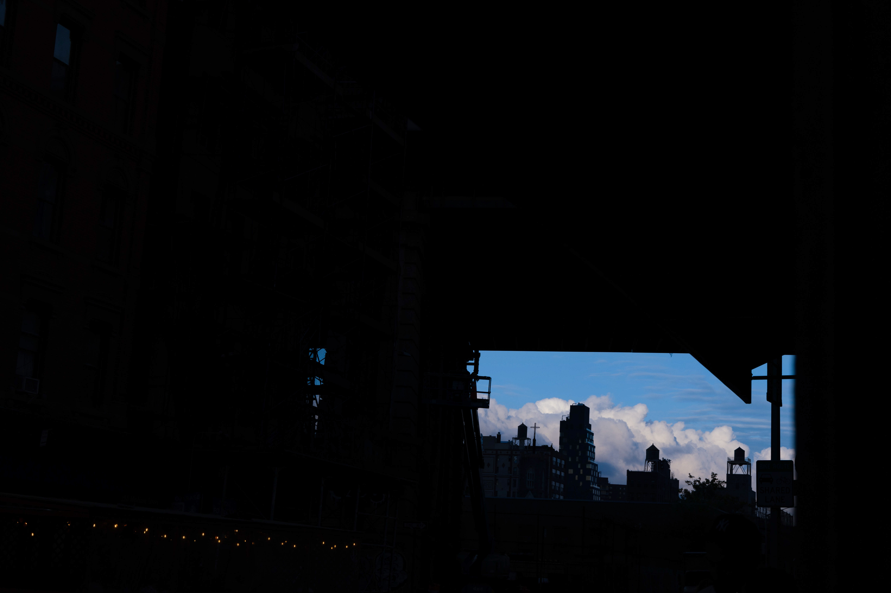

Dandelicat
A nonlinear web world about migration, adaptation, identity, and playful systems.
View Project ↗V — Visual Works
A collection of finished and more developed projects across web experiences, visual storytelling, graphic design, photography, and spatial work.
A nonlinear web world about migration, adaptation, identity, and playful systems.
View Project ↗
An early web experiment using the acronym AVERY to explore language systems, interaction, and self-identification.
View Project
A Photoshop poster created for the Dandelicat thesis world, extending its visual language into a surreal print-based format.
View Project
A photography series using colored light, domestic corners, and repeated framing to trace subtle spatial outlines through color and surface.
View Project
A mouse-based interactive website exploring bilingual thought, translation error, and the relationship between language systems and data systems.
View Project
A wearable light sculpture exploring attachment, infection, biological dependence, and color within darkness.
View Project
A photography series exploring shadow, structure, and underexposed light in everyday urban scenes across New York.
View Project
A wearable soft sculpture that transforms the flexible form of fingers into oversized, colorful, and deliberately awkward body-based shapes.
View Project